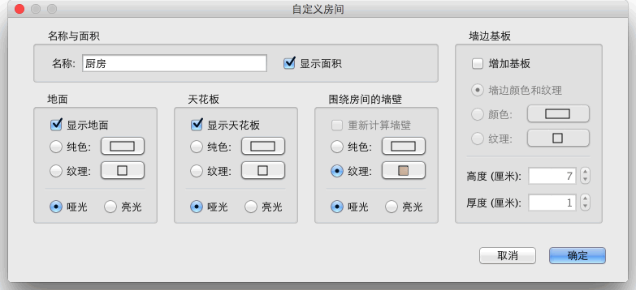

| 自定义房间 | |||
如果要自定义家居模型中房间的位置，您可以在平面图中将其选中后用鼠标进行操作。 如果平面图中只有一个房间被选中的话，您可以用鼠标单独拖曳房间的每一个角点。如果房间的名称、面积被设置为可见的话，您也可以分别移动它们的位置。
|

|
当鼠标指针位于这些标示符上时，其形状会发生变化，指示您可以拖曳鼠标更改相应的点或文本的位置。如果您将角标示符拖到墙体附近，当鼠标处于按下状态且“自动吸附”启用时，您可以使用显示出的校准线进行对准。 您还可以使用“自定义房间”对话框更改房间的名称和 3D 属性，方法是在平面图中双击您想要更改的房间，或者在选中要更改的房间后使用平面图→自定义房间... 菜单项。  在该对话框中，您可以更改选定房间的名称，以及其在 3D 视图中的可见性。 |
|